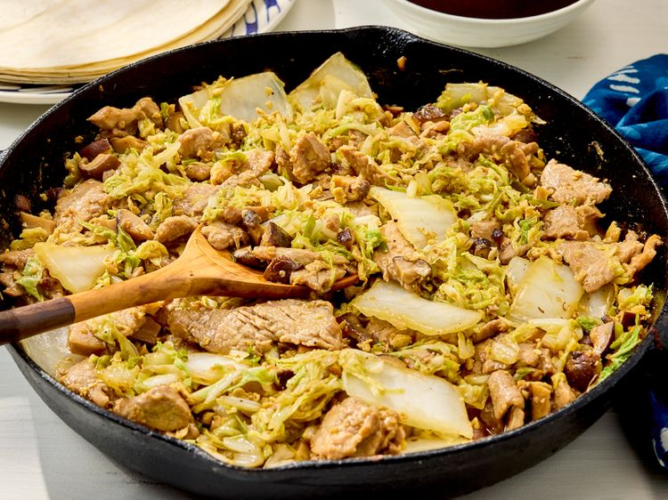

Moo Shu Pork

Description
I always order moo shu pork in Chinese restaurants and wanted to try making it at home using a combination of recipes. You can find Chinese pancakes at Asian grocery stores. Let everyone fill their own pancakes and top with the hoisin sauce mixture — it absolutely makes this dish!
Ingredients
- 2 tablespoons soy sauce
- 2 tablespoons white wine
- 1 teaspoon sesame oil
- 2 teaspoons cornstarch
- 1 pound pork tenderloin, cut into thin strips
- 1 ¾ ounces dried shiitake mushrooms
- ½ cup sliced green onions
- 3 tablespoons minced garlic
- 2 tablespoons peeled and minced fresh ginger
- 1 head napa cabbage
- 3 tablespoons soy sauce
- 3 tablespoons white wine
- ½ teaspoon cornstarch
- ½ teaspoon white sugar
- ¼ teaspoon ground black pepper
- 1 tablespoon vegetable oil, plus more if needed
- 1 teaspoon sesame oil
- 2 large eggs, beaten
- 2 tablespoons white wine
- 1 cup hoisin sauce
- 1 tablespoon soy sauce
- 1 teaspoon sesame oil
- 16 frozen Chinese pancakes, thawed and warmed
Steps
- Gather all ingredients.
- Place 2 tablespoons of soy sauce, 2 tablespoons of white wine, 1 teaspoon of sesame oil, and 2 teaspoons of cornstarch in a non-reactive bowl; stir until smooth. Stir pork into marinade until thoroughly coated; refrigerate for 30 minutes to an hour.
- Meanwhile, pour hot water over mushrooms in a bowl; set aside to soften for 15 to 20 minutes. Drain mushrooms; pat dry, remove any hard stem pieces, and finely chop. Combine mushrooms, green onions, garlic, and ginger in a bowl; set aside.
- Remove outer leaves from napa cabbage; tear green leafy portions from the central stalks of the leaves. Slice stalks into thin 1-inch pieces. Finely chop green leafy portions, and set aside the sliced stems and chopped leaves in separate bowls.
- Combine 3 tablespoons of soy sauce, 3 tablespoons of white wine, 1/2 teaspoon of cornstarch, sugar, and ground black pepper in a small bowl; set aside.
- Heat vegetable oil and 1 teaspoon of sesame oil in a wok over medium-high heat. Add marinated pork; cook and stir until cooked through and edges have begun to brown, about 5 minutes. Transfer pork to a bowl.
- Pour beaten eggs into the hot wok, adding more vegetable oil if necessary; cook and stir until eggs are scrambled, firm, and well-broken up, about 2 minutes. Stir in mushroom mixture; cook and stir 1 to 2 minutes. Add napa cabbage stem pieces; cook and stir until hot but still crunchy, about 1 minute. Add chopped cabbage leaves and 2 tablespoons of white wine; cook and stir until hot, about 1 minute. Add cooked pork and reserved cornstarch mixture. Stir everything together until slightly thickened and hot, about 2 minutes.
- Mix hoisin sauce, 1 tablespoon of soy sauce, and 1 teaspoon of sesame oil in a small bowl until thoroughly combined.
- To serve, spread about 1 tablespoon of hoisin mixture on each pancake, top with about 1/2 cup of the pork mixture, roll, and serve.
Nutritional Facts
355 Calories, 8g Fat, 53g Carbs, 17g Protein
Source
Index page